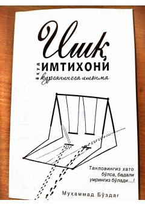

IIYoshlarni haqiqiy muhabbat va oilaviy baxtga yo'llovchi amaliy kitob.
Bu kitob yoshlarning sevgi va muhabbat sinovlarida to'g'ri yo'l topishlariga yordam berish maqsadida yozilgan. Muallif Muhammad Bo'zdag yosh yigit va qizlarning yolg'on sevgiga aldanmasdan, oilaviy baxt yo'lida mustahkam qadam qo'yishlarini o'rgatadi. Kitobda oilaviy va ijtimoiy to'siqlarni yengish, haqiqiy muhabbatni tanish masalalari ko'rib chiqiladi.